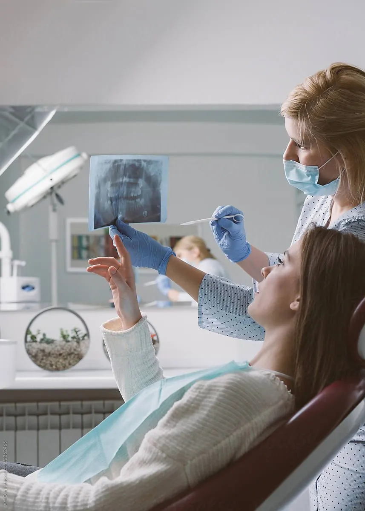

luxus, hanem egy jó terv eredménye. Segítek
luxus, hanem egy jó terv eredménye. Segítek 
LegnépszerűbbTeljes fogszabályozó kezelés
Részletes felmérés, 3D szkennelés, az eredmény szimulációja, a hozzád illő készülék és rendszeres kontroll a végéig.
3D szkennelésMosolyszimulációHavi kontrollRetenció benne
12–24 hónapátlagos kezelési idő
Részletek →